EN.601.497/697 Human-Centered Robotics, Fall 2026. Team: Kai Hua Liu, Zijun Xiang, Zixuan Zhu.
This report documents the simulation part of the project, step by
step, with a screenshot for every step. Every image and number below is
produced by the code in this repository
(scripts/make_report_assets.py,
scripts/run_experiments.py,
scripts/make_figures.py,
scripts/make_report.py). Nothing was run on a real
robot.
A 7-joint arm carries a Wuji Hand 2. The hand holds tweezers and closes them with thumb and index finger. A wrist camera finds the seeds, a nominal planner removes them one by one, and a safety filter overrides commands that would leave the safe set. All results are over 8 random berries per condition, 8 target seeds each (64 seeds per condition).
| Question from the proposal | Short answer from the simulation |
|---|---|
| 1. Safe set: can a filter keep the arm and hand inside it? | Yes, in the nominal simulation. With the filter 0% of seeds had a violation and 100% were removed. A planner mis-tuned to press too deep and approach too fast violated the safe set on 100% of seeds; behind the filter the same planner violated it on 2% and removed 89% (without the filter: 67%). |
| 2. Tool use: can the hand hold and squeeze the tweezers, and what can it sense? | Thumb and index close the jaws through contact. From finger encoders alone the jaw gap is known to 0.06 mm (rms). From fingertip force the squeeze on a 1 mm object is known to 0.014 N (rms). |
| 3. Uncertainty: how conservative must the filter be? | With the well-tuned planner the margins made no difference: 0% violations at every setting. They matter when a mis-tuned planner makes the filter decide the depth. Violations then: 48% with no margins, 25% with 50% conformal bounds, 2% with 90% bounds, 0% with 99% bounds (100% of seeds removed). Three times the 99% bounds was too conservative: 0% removed. |
| 4. Shared control: how to split authority? | Person picks the seed and steers sideways, robot controls depth and gripping, filter on: 100% removed, 0% with a violation, 10.0 s per seed. Person steering everything: 78% removed, 66% with a violation, 11.3 s per seed without the filter, 27% removed, 6% with a violation, 21.1 s per seed with it. |
| 5. Sim-to-real: does the simulation-calibrated safe set transfer? | Only tested against a second, shifted simulation (softer fruit, noisier sensors), not on hardware. Not as it is: with the simulation calibration 19% of seeds had a violation (97% removed). Partial on-site calibration made the robot too cautious to grip (30% and 3% removed). With the full on-site calibration: 80% removed, 2% with a violation. |
Main limits of this work are listed at the end. The most important ones: the fruit is not a finite-element body, the human operator is a model, and "sim-to-real" has not touched hardware.
| Proposal item | Status | Where |
|---|---|---|
| MuJoCo scene: arm, Wuji Hand 2, tweezers, compliant berry, seed targets | done | seedsafe/scene.py, seedsafe/env.py |
| Force and indentation damage measure | done | seedsafe/contact.py |
| Scripted grasp that holds the tweezers and closes the jaws | done | scripts/design_grasp.py,
seedsafe/hand.py |
| Nominal planner for arm and fingers | done (iLQR-based MPC) | seedsafe/ilqr.py, seedsafe/planner.py |
| Safety filter | done (CBF constraints in a QP, reachability-based approach speed) | seedsafe/safety.py |
| Seed localization with uncertainty bounds | done (wrist camera + conformal prediction) | seedsafe/perception.py,
seedsafe/conformal.py |
| Tweezer pose and tip-force estimation from the finger joints | done | seedsafe/hand.py,
seedsafe/estimation.py |
| Experiments against an unfiltered baseline | done | scripts/run_experiments.py |
| Human operator, shared autonomy | done with a simulated operator; a keyboard teleoperation script exists for real people | seedsafe/operator.py,
scripts/teleop_keyboard.py |
| Calibrate the tweezer grasp away from the berry | done in simulation | seedsafe/hand.py |
| Port to the physical arm, proxy berry, real strawberries | not done (simulation only, as agreed) |
Abbreviations used below, with their full names: MPC (Model Predictive Control, 模型预测控制), iLQR (iterative Linear Quadratic Regulator, 迭代线性二次型调节器), CBF (Control Barrier Function, 控制屏障函数), QP (Quadratic Program, 二次规划), DoF (Degrees of Freedom, 自由度), MJCF (MuJoCo XML model Format, MuJoCo 模型文件格式), rms (root mean square, 均方根). A glossary of the technical terms (English / 中文) is at the end.
What was done. The official Wuji Hand model (20 DoF) is mounted on a Flexiv Rizon 4 arm model (7 DoF) through an angled adapter. The Rizon 4 stands in for the Flexiv Enlight because no public Enlight model exists. A pair of tweezers (two elastic arms joined at the base, 140 mm long) sits in the hand. A strawberry with about 200 seeds rests on a soft cradle; a tray takes the removed seeds. The model has 38 position coordinates and 27 motors.
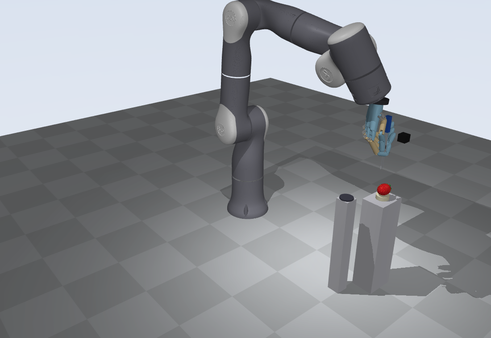
The hand holding the tweezers, from two sides. Thumb and index finger pinch the two tweezer arms. The other three fingers wrap the printed sleeve (blue). The black box is the wrist camera.
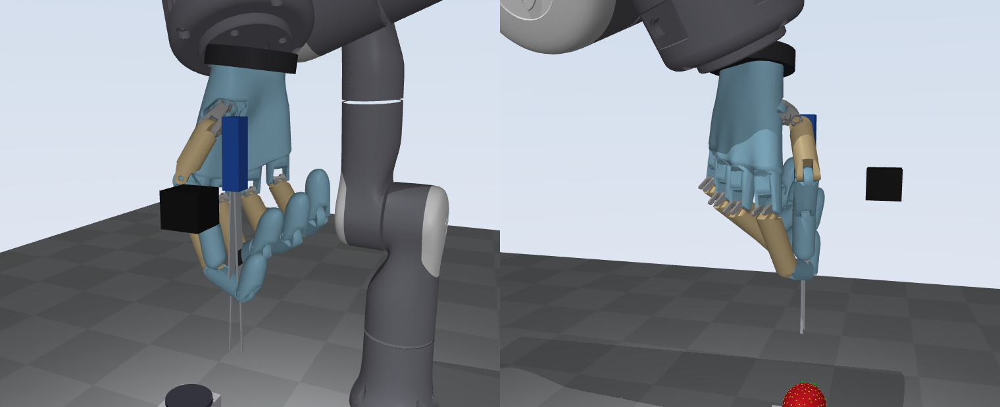
Left: the berry. Right: what the wrist camera sees from its survey position.
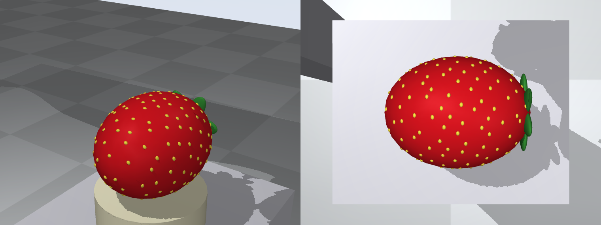
Modelling choices that matter:
scripts/design_grasp.py. The stock finger position gains
are very soft, so the two pinching fingers use higher gains, and the
thumb is made as stiff as the index along the pinch axis.What was done. This is the first hardware step of the proposal, done here in simulation. Two sweeps, run once per session:
After that the robot estimates the jaw gap from finger encoders (rms error 0.059 mm) and the squeeze force from the fingertip force sensors (rms error 0.014 N on the gauge). The sweep also showed that the two arms do not close evenly: the midpoint between the tips drifts sideways by up to 0.42 mm. That drift is stored and compensated. Without the compensation the tips landed next to the seeds.
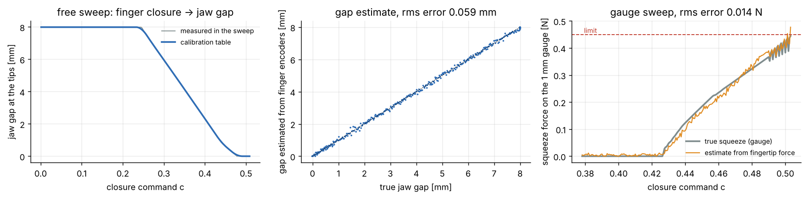
Reproduce:
python scripts/make_report_assets.py calibration
What was done. MuJoCo simulates the arm, the hand,
the tweezers and the finger contacts. The millimetre-scale contact at
the two tweezer tips is computed by seedsafe/contact.py,
because the safe set is defined on exactly these quantities:
F = k * depth^1.5
(a Hertz-type law with damping) plus a shear spring that slides at the
friction limit;Safe set (per seed, judged on ground truth):
| Quantity | Limit |
|---|---|
| tip indentation | 0.6 mm |
| normal force per tip | 0.15 N |
| shear force per tip | 0.08 N |
| jaw squeeze on the seed | 0.45 N |
| tool slip inside the hand | 0.4 mm |
Indentation beyond 1.0 mm or force beyond 0.3 N counts as visible damage.
The figure shows the contact law (left) and what the same bad command does without and with the safety filter (middle, right): "push 2 mm into the berry at 4 mm/s". Without the filter the tips went 2.7 mm deep (7.9 N). With the filter they stopped at 0.46 mm (0.09 N).
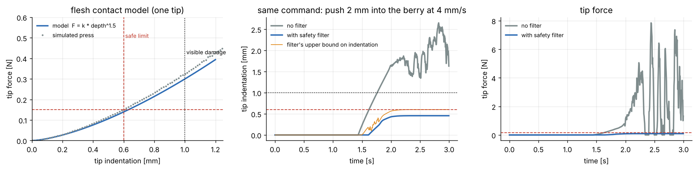
Reproduce:
python scripts/make_report_assets.py contact
What was done. The camera moves about 10 cm above the berry and takes one colour and one depth image. Yellow blobs are seeds. For each seed the flesh around it gives the surface point and the surface normal. Modelled error sources: pixel size, depth noise, hand-eye calibration error, shading.
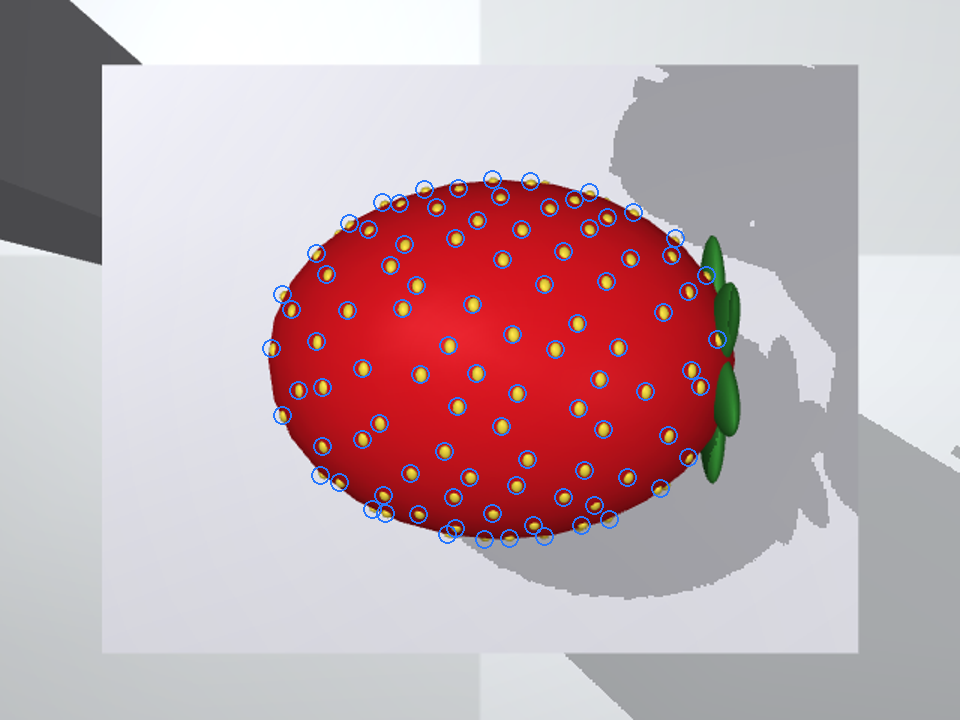
On 12 random berries (156 seeds): sideways error 0.22 mm on average (0.31 mm at the 90th percentile), surface height error +0.12 mm on average (0.24 mm at the 90th percentile), normal direction error 1.1 degrees. The height error has a bias: the camera places the surface a little too low.
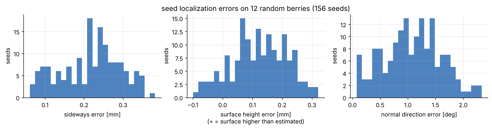
Only the seeds inside a fixed patch on top of the berry are physically simulated and targeted (the proposal's "fixed patch of seeds").
Reproduce:
python scripts/make_report_assets.py perception
What was done. The planner is a phase machine: move above the seed, descend, close the jaws, pull, carry to the tray, release. Inside each phase the motion comes from MPC: an iLQR solver plans 0.5 s ahead on a small model (tip position and jaw closure), 50 times per second, with costs for reaching the goal, speed limits and staying clear of the berry between seeds.
The planner does not know the safe set. Two details make it gentle anyway:
The timeline below shows one seed with the filtered system: 7.4 s, peak indentation 0.36 mm, peak tip force 0.063 N, peak squeeze 0.31 N. Blue is ground truth, grey is what the robot estimates, orange is the upper bound the filter uses.
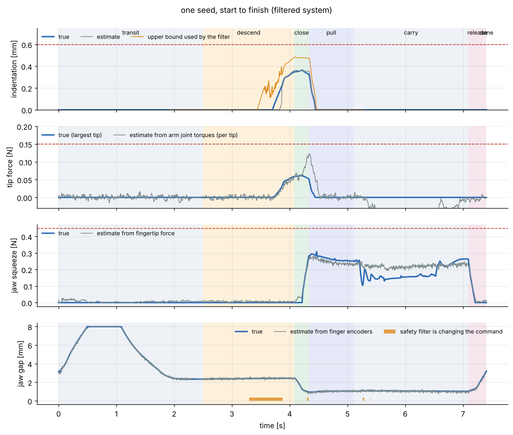
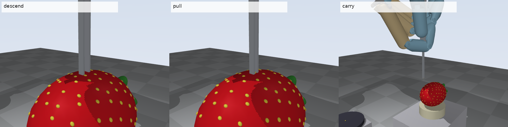
Reproduce:
python scripts/make_report_assets.py single
What was done. The filter sits between the planner (or the human) and the robot. Every 5 ms it solves a small QP: stay as close as possible to the commanded tip velocity and jaw closing rate, subject to one CBF constraint per limit of the safe set.
| Constraint | Uses | Effect |
|---|---|---|
| indentation | upper bound on indentation (kinematics + touch, capped by what the measured force allows) | slows and stops the descent |
| normal force | force estimate + error bound, upper bound on flesh stiffness | slows, stops, or backs off |
| approach speed | distance to where contact becomes possible | tip arrives slowly enough to stop on touch |
| drag | "contact possible" flag | limits sideways motion while touching |
| grip stability | sideways force estimate vs. what the sleeve grip can hold | prevents tool slip |
| jaw squeeze | squeeze estimate + error bound | limits jaw closing |
The approach-speed limit is the boundary of a reachable set: the largest speed from which the tip can still slow down to touch speed before contact becomes possible, given a reaction delay and a braking limit. The figure shows the set computed on a grid and the closed-form boundary the filter uses.
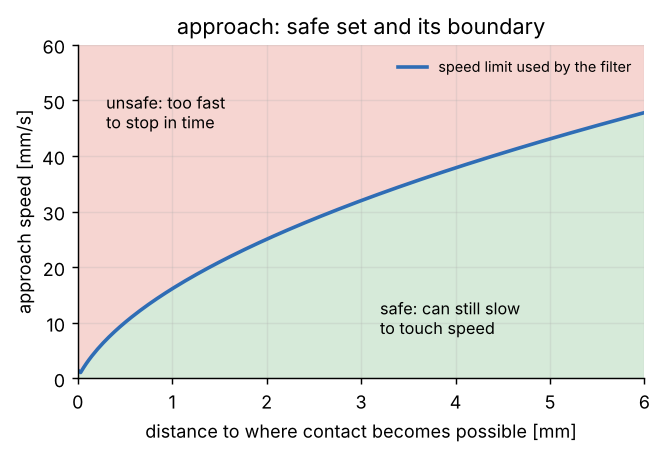
What was done. The filter needs error bounds for its estimates. They come from split conformal prediction: run calibration berries, record the errors against ground truth, and take the quantile that gives the wanted coverage. 80 seeds on 10 calibration berries were used. At 90% coverage the bounds are: surface height before touch 0.67 mm, indentation after touch 0.10 mm, sideways seed position 0.44 mm, tip force 0.049 N, squeeze 0.078 N.
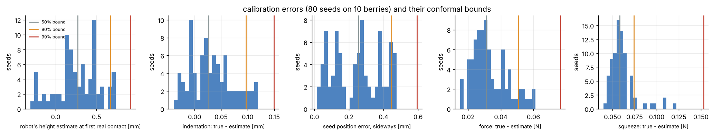
The sideways bound also sets how far the jaws are opened before descending, so that the seed is surely between the tips.
Each condition: 8 random berries (size, stiffness, seed layout, pull-out force, sensor biases and calibration errors all vary), 8 target seeds per berry. "Violation" means that at least one limit of the safe set was exceeded while working on that seed. Error bars are 95% Wilson intervals.
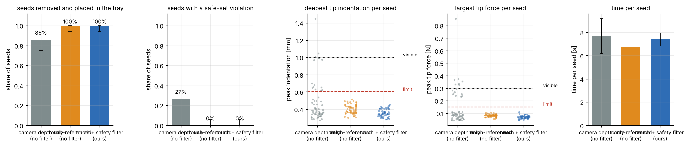
| condition | seeds | removed | any violation | indent | force | shear | squeeze | slip | visible damage | time / seed [s] | attempts | filter intervention |
|---|---|---|---|---|---|---|---|---|---|---|---|---|
| camera depth only (no filter) | 64 | 86% | 27% | 25% | 25% | 25% | 14% | 0% | 13 | 7.7 | 1.34 | 0% |
| touch-referenced (no filter) | 64 | 100% | 0% | 0% | 0% | 0% | 0% | 0% | 0 | 6.8 | 1.00 | 0% |
| touch + safety filter (ours) | 64 | 100% | 0% | 0% | 0% | 0% | 0% | 0% | 0 | 7.4 | 1.02 | 1% |
Findings:
So in nominal conditions the filter is not what makes the system gentle; the touch-referenced planner already is. The filter matters when the command is wrong, which the next test shows.
The planner is told to go twice as deep (0.8 mm instead of 0.4 mm) and to approach four times faster (16 mm/s instead of 4 mm/s) than it should.
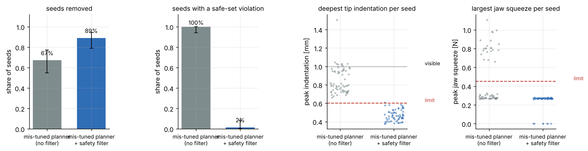
| condition | seeds | removed | any violation | indent | force | shear | squeeze | slip | visible damage | time / seed [s] | attempts | filter intervention |
|---|---|---|---|---|---|---|---|---|---|---|---|---|
| mis-tuned planner (no filter) | 64 | 67% | 100% | 100% | 100% | 100% | 34% | 0% | 33 | 6.3 | 1.33 | 0% |
| mis-tuned planner + safety filter | 64 | 89% | 2% | 2% | 0% | 0% | 0% | 0% | 0 | 10.4 | 1.17 | 7% |
Without the filter: 100% of seeds with a violation, deepest indentation 1.51 mm, 33 spots with visible damage, 67% of seeds removed (pressing too deep also makes the tips miss seeds). Behind the filter, with the 90% bounds: 2% of seeds with a violation (1 of 64), deepest indentation 0.61 mm against the limit of 0.6 mm, no visible damage, 89% of seeds removed. The filter changed 7% of the commanded motion and the time per seed went from 6.3 s to 10.4 s.
So the filter turned a planner that damages every seed site into one that almost never leaves the safe set. It is not a guarantee: one seed in this test went slightly past the limit.
The same system with uncertainty margins from conformal bounds at different coverage levels, and with no margins at all.
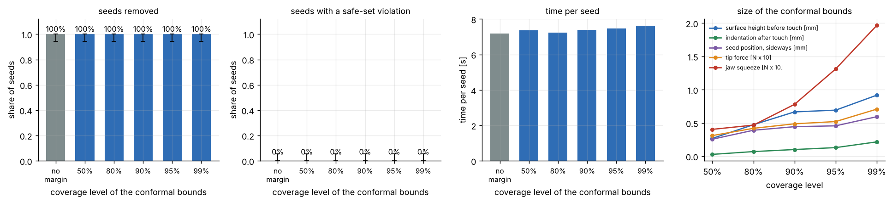
| condition | seeds | removed | any violation | indent | force | shear | squeeze | slip | visible damage | time / seed [s] | attempts | filter intervention |
|---|---|---|---|---|---|---|---|---|---|---|---|---|
| no margin | 64 | 100% | 0% | 0% | 0% | 0% | 0% | 0% | 0 | 7.2 | 1.05 | 1% |
| 50% | 64 | 100% | 0% | 0% | 0% | 0% | 0% | 0% | 0 | 7.4 | 1.08 | 1% |
| 80% | 64 | 100% | 0% | 0% | 0% | 0% | 0% | 0% | 0 | 7.2 | 1.00 | 1% |
| 90% | 64 | 100% | 0% | 0% | 0% | 0% | 0% | 0% | 0 | 7.4 | 1.02 | 1% |
| 95% | 64 | 100% | 0% | 0% | 0% | 0% | 0% | 0% | 0 | 7.5 | 1.03 | 1% |
| 99% | 64 | 100% | 0% | 0% | 0% | 0% | 0% | 0% | 0 | 7.6 | 1.02 | 2% |
Bounds used:
| coverage | surface [mm] | indentation [mm] | sideways [mm] | force [N] | squeeze [N] |
|---|---|---|---|---|---|
| 50% | 0.27 | 0.03 | 0.26 | 0.031 | 0.040 |
| 80% | 0.47 | 0.07 | 0.39 | 0.042 | 0.047 |
| 90% | 0.67 | 0.10 | 0.44 | 0.049 | 0.078 |
| 95% | 0.69 | 0.13 | 0.46 | 0.052 | 0.131 |
| 99% | 0.92 | 0.22 | 0.59 | 0.071 | 0.196 |
Coverage of the bounds on the test berries (they were calibrated on other berries):
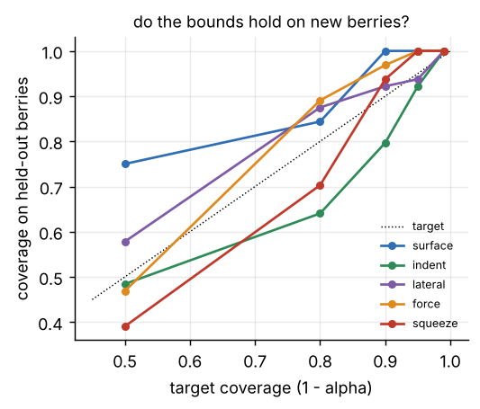
Findings with the well-tuned planner:
To see what the margins do, the same sweep was repeated with the mis-tuned planner of E1b. Now the planner always asks for too much, and the filter decides how deep the tips go.
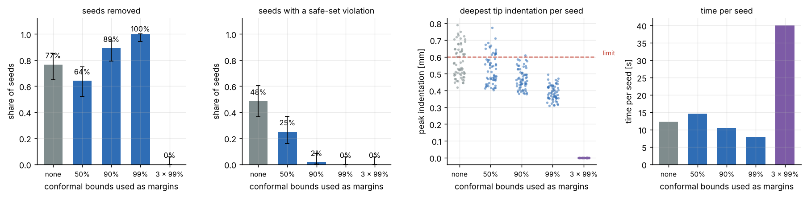
| condition | seeds | removed | any violation | indent | force | shear | squeeze | slip | visible damage | time / seed [s] | attempts | filter intervention |
|---|---|---|---|---|---|---|---|---|---|---|---|---|
| no margins | 64 | 77% | 48% | 44% | 12% | 3% | 0% | 0% | 5 | 12.3 | 1.30 | 7% |
| 50% bounds | 64 | 64% | 25% | 25% | 5% | 5% | 0% | 0% | 11 | 14.6 | 1.42 | 12% |
| 90% bounds | 64 | 89% | 2% | 2% | 0% | 0% | 0% | 0% | 0 | 10.4 | 1.17 | 7% |
| 99% bounds | 64 | 100% | 0% | 0% | 0% | 0% | 0% | 0% | 0 | 7.8 | 1.00 | 5% |
| 3 x the 99% bounds | 64 | 0% | 0% | 0% | 0% | 0% | 0% | 0% | 0 | 40.0 | 1.00 | 0% |
Findings when the filter decides the depth:
Two cautions for reading the seed-removal numbers. First, the sideways bound also sets how far the jaws open before the descent. The 50% setting opens them less (0.26 mm bound instead of 0.59 mm at 99%), which by itself causes more misses. Second, each setting has 64 seeds on 8 berries, and failures cluster on single berries, so differences of 10 to 15 percentage points in removal between neighbouring settings are within the noise. The trend in violations (from 48% down to 0%) is the reliable part.
A simulated person steers the tip with a joystick model: reaction delay 0.2 s, tremor, motor noise, and depth judgement that is off by about 0.45 mm (standard deviation). Gripping is always automatic after the person presses "grip".
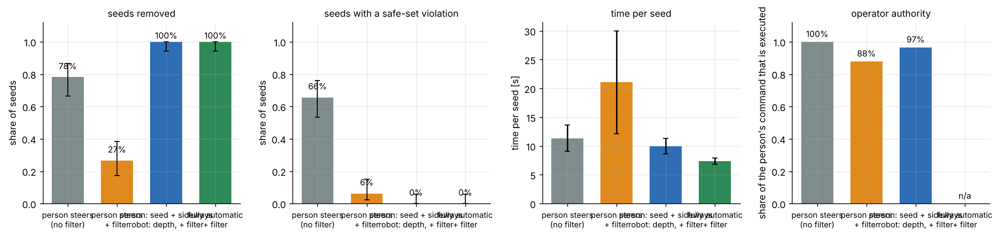
| condition | seeds | removed | any violation | indent | force | shear | squeeze | slip | visible damage | time / seed [s] | attempts | operator authority |
|---|---|---|---|---|---|---|---|---|---|---|---|---|
| person steers (no filter) | 64 | 78% | 66% | 64% | 59% | 55% | 6% | 0% | 82 | 11.3 | 1.45 | 100% |
| person steers + filter | 64 | 27% | 6% | 2% | 6% | 6% | 0% | 0% | 3 | 21.1 | 1.77 | 88% |
| person: seed + sideways robot: depth, + filter | 64 | 100% | 0% | 0% | 0% | 0% | 0% | 0% | 0 | 10.0 | 1.08 | 97% |
| fully automatic + filter | 64 | 100% | 0% | 0% | 0% | 0% | 0% | 0% | 0 | 7.4 | 1.02 | n/a |
Findings:
The split that worked: the person keeps the decisions and the sideways motion; the robot keeps depth, holding the tweezers and closing the jaws. The operator here is a model, so these numbers say what the control structure does, not how real people will perform.
There is no hardware in this project, so transfer is tested against a second simulation that the robot was not calibrated in: flesh stiffness x0.42, seed friction 0.5 instead of 0.6, pull-out force x1.15, softer cradle, torque and fingertip sensor noise x1.5, depth noise x1.6, tool and hand-eye calibration errors x1.5 to x1.6.
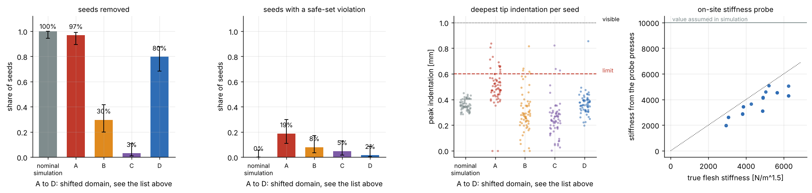
| condition | seeds | removed | any violation | indent | force | shear | squeeze | slip | visible damage | time / seed [s] | attempts |
|---|---|---|---|---|---|---|---|---|---|---|---|
| nominal simulation (reference) | 64 | 100% | 0% | 0% | 0% | 0% | 0% | 0% | 0 | 7.4 | 1.02 |
| A: simulation calibration only | 64 | 97% | 19% | 19% | 0% | 0% | 0% | 0% | 0 | 7.7 | 1.12 |
| B: + noise and stiffness probes | 64 | 30% | 8% | 8% | 3% | 3% | 0% | 0% | 0 | 18.7 | 1.81 |
| C: + surface re-referencing | 64 | 3% | 5% | 5% | 3% | 3% | 0% | 0% | 0 | 21.6 | 2.00 |
| D: + new conformal bounds | 64 | 80% | 2% | 2% | 2% | 2% | 0% | 0% | 0 | 8.4 | 1.44 |
| bound (90% coverage) | from the nominal simulation | recalibrated in the shifted domain |
|---|---|---|
| surface height before touch [mm] | 0.666 | 0.163 |
| indentation after touch [mm] | 0.101 | -0.049 |
| seed position, sideways [mm] | 0.444 | 0.530 |
| tip force [N] | 0.049 | 0.078 |
| jaw squeeze [N] | 0.078 | 0.136 |
Results: reference in the nominal simulation: 100% removed, 0% with a violation, 7.4 s per seed (64 seeds). A: 97% removed, 19% with a violation, 7.7 s per seed. B: 30% removed, 8% with a violation, 18.7 s per seed. C: 3% removed, 5% with a violation, 21.6 s per seed. D: 80% removed, 2% with a violation, 8.4 s per seed.
Reading the results:
The comparison of C and D shows that the bounds were what blocked the robot. Which bound mattered most was not separated. The sideways bound also grew, and it widens the jaw opening, which by itself reduces misses.
So the simulation-calibrated safe set did not transfer as it was. It transferred after an on-site calibration with four parts: force-noise check, stiffness probe, surface re-referencing and new conformal bounds. Even then the result (80% removed) is below the nominal simulation (100%).
Cautions:
demo/seed_removal_demo.mp4 shows the filtered system
removing six seeds from one berry, with live gauges for indentation, tip
force and jaw squeeze against their limits. Key frames:
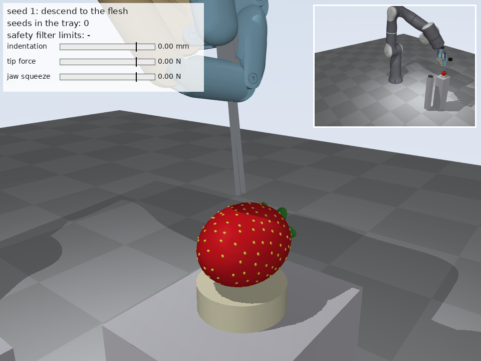
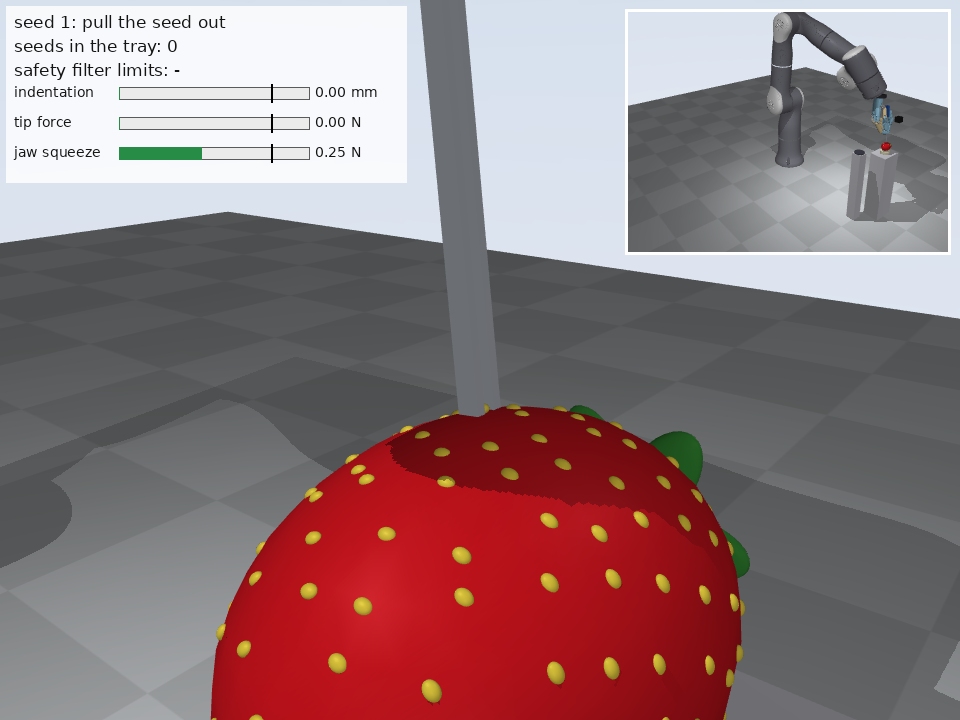
Reproduce: python scripts/make_demo.py
python -m pytest -q tests runs 12 tests: the QP solver
against brute force, conformal coverage, the berry geometry, iLQR, the
reachable-set boundary, the tweezer calibration, "the filter stops a
deep press", and a short filtered run that must remove seeds with no
violation.
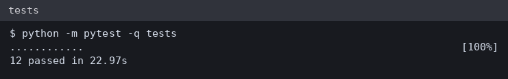
The same tests were also run on the team laptop in the Linux environment that the assistant can use there (Python 3.10, MuJoCo 3.17, no GPU rendering): 12 passed. The experiments and the video were produced on a cloud machine (Python 3.13, MuJoCo 4.0) and copied to the repository.
scripts/teleop_keyboard.py is
ready for real trials but was not tested with a display.| Term | 中文 | Meaning here |
|---|---|---|
| achene | 瘦果 | the "seed" on the outside of a strawberry |
| end-effector | 末端执行器 | what the arm carries: here the hand with tweezers |
| degrees of freedom (DoF) | 自由度 | number of independent joints |
| forward kinematics | 正运动学 | computing where the tip is from the joint angles |
| Jacobian | 雅可比矩阵 | maps joint speeds to tip speed, and tip force to joint torques |
| indentation | 压入深度 | how far a tip is pressed into the flesh |
| safe set | 安全集 | all states in which every damage limit holds |
| safety filter | 安全滤波器 | module that changes a command as little as possible to stay in the safe set |
| control barrier function (CBF) | 控制屏障函数 | a function that is positive inside the safe set; the filter keeps it from decreasing too fast |
| quadratic program (QP) | 二次规划 | small optimization problem solved by the filter every 5 ms |
| reachability / reachable set | 可达性 / 可达集 | the states from which a failure can no longer be avoided (or can still be avoided) |
| model predictive control (MPC) | 模型预测控制 | plan a short time ahead, execute the first step, plan again |
| iterative LQR (iLQR) | 迭代线性二次型调节器 | the optimizer used inside the MPC |
| nominal planner | 名义规划器 | the planner that pursues the task and ignores the safe set |
| conformal prediction | 保形预测 | turns calibration errors into bounds with a coverage guarantee |
| coverage | 覆盖率 | share of new cases in which the bound holds |
| hand-eye calibration | 手眼标定 | where the camera sits relative to the robot |
| shared autonomy / shared control | 共享自主 / 共享控制 | person and robot command the motion together |
| teleoperation | 遥操作 | a person steers the robot directly |
| sim-to-real gap | 仿真到现实差距 | what works in simulation may behave differently on hardware |
| Hertz contact | 赫兹接触 | contact law in which force grows with depth to the power 1.5 |
| tare | 去皮 / 清零 | setting the force reading to zero in free space |
| back-drivable | 可反向驱动 | a joint that outside forces can move, so its torque can be sensed |
Last test run: 12 passed in 22.97s